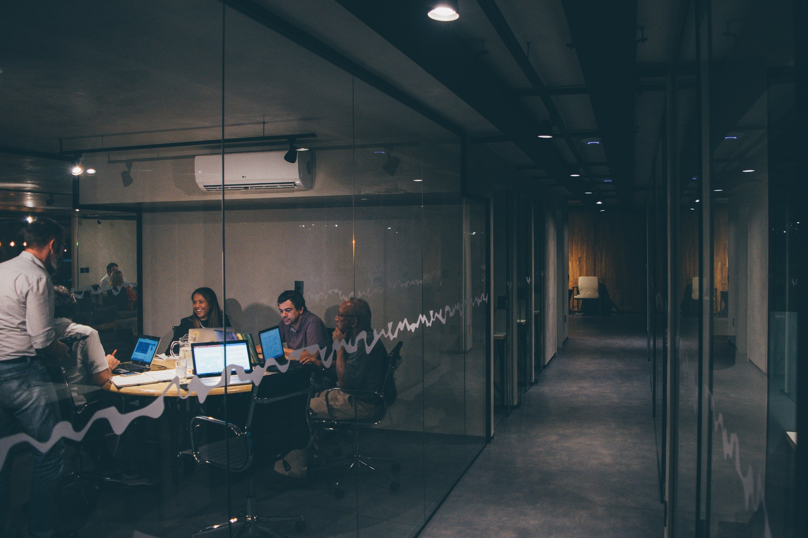
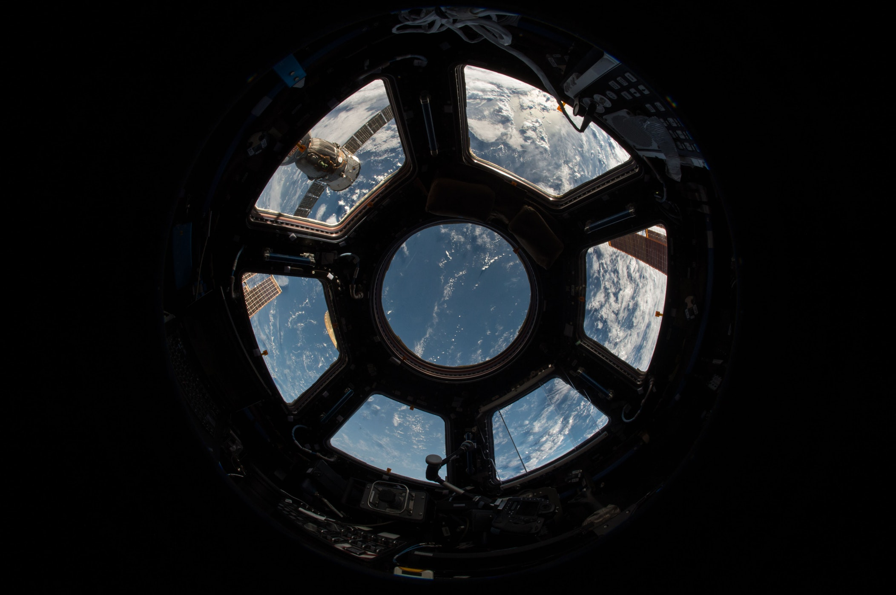
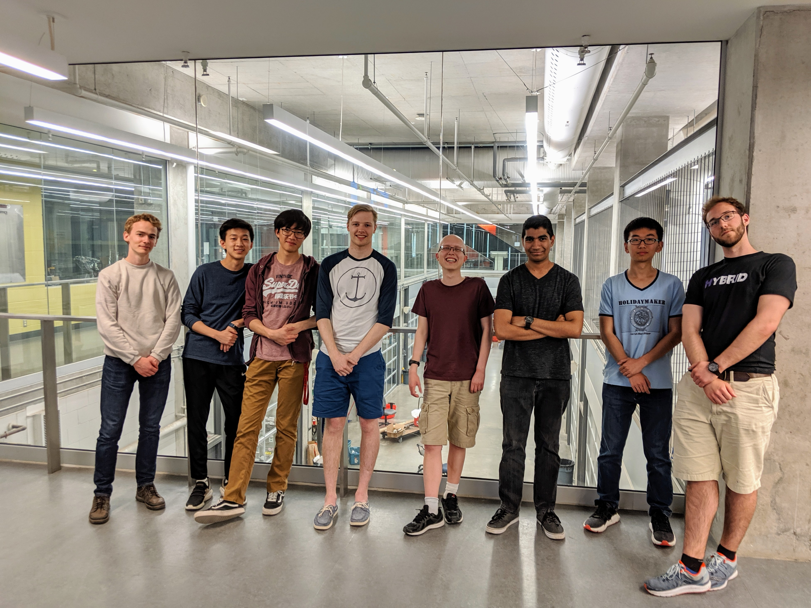

Start-up culture!
WatLock was founded in 2018, making it one the youngest student design team at the University. Our
close-packed, fast-growing team breathes in a start-up environment. You will most likely know everyone in
the team and be part of a welcoming
community. We have a flat organizational structure - meaning your ideas are always going to be heard by
us!

Space Engineering!
WatLock is proud to be one of the few student design teams at the University of Waterloo working on a
large-scale Space Engineering project. We are the only team working on space colonization! To be able to
accomplish our ambitious goal, we have to think as
space engineers. We are a team that
shares a burning passion; space exploration!

Go to Vancouver!
As Project Airlock Challenge | Phase II approaches, get ready to pack your space underwears and represent
the team at Vancouver, BC! During Phase I of the competition, the members that represented team WatLock
consisted of only first year and second year students.
Adam Powell was one of the team members that went to Vancouver for Project Airlock Challenge | Phase I,
and he said,
"Vancouver was truly an amazing experience and a beautiful city. I would highly recommend
everyone to visit one day!"
Team Socials!
Every term, WatLock is dedicated to organize at least two team socials. From board games to eat-outs, VR
arcade to the cinemas, bowling to mario kart, this is a great opportunity to build a stronger relationship
between team members but also a great
time to de-stress and have fun! Nothing listed above interests you? Then we are open to your suggestions
for our next team social!

Gain hands-on experience!
This is the opportunity for you to gain valuable hands-on experience while tackling real-life challenges.
Many of our team members started to learn and apply technical skills that employers are looking for. They
attained CO-OP placements at companies such as Apple, Huawei and Lumentum.
You can gain a plethora of skills in different fields such as:
Mechanical: CAD, Ansys, FEA, machine shop experience...
Electronics: Microcontrollers, wiring, soldering, circuits, PCB design...
Software: Web development (HTML/CSS/Javascript), Python, UI/UX design, Arduino...